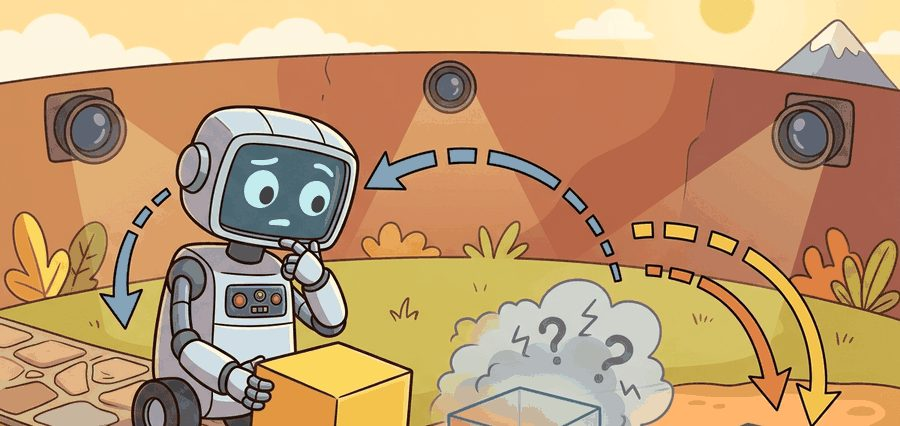
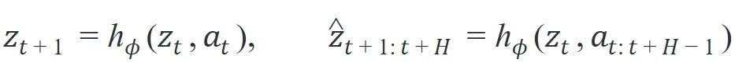
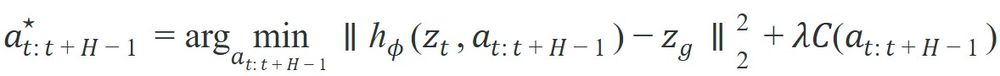

"A world model becomes actionable the moment you let the next action change the future it predicts."
An Action-Conditioned Predictor

This section assumes familiarity with the joint-embedding predictive architecture and masked-latent prediction introduced in section 40.2. The action-conditioned planning loop developed here is picked up and extended in section 40.4, which shows how the same self-supervised backbone transfers to downstream control tasks. For the optimization-based counterpart in pixel and state space, see Chapter 37; for generative planners that sample action sequences rather than rolling a latent model forward, the comparison begins in section 41.1.
A robot watches a mug slide across a counter and builds a rich latent model of how objects move. But that model is useless for planning until the robot can ask: "what latent future follows if I close my gripper right now?" That question is exactly what V-JEPA 2 answers. By bolting an action-conditioned head onto a self-supervised video backbone trained on millions of frames, it converts passive prediction into steerable imagination. Roboticists can now specify a goal image and let the model search over action sequences entirely in latent space, without a single rollout in the real world. The sections below implement this latent-space MPC loop, stress-test it on noisy plans, and examine where the architecture breaks.
Show a video model a thousand clips of mugs sliding across counters and it can vividly imagine how a mug might move next, yet it still cannot answer the one question a robot actually needs answered: which of those futures follows if I close my gripper right now? Figure 40.3A captures that gap: a passive video model imagines many possible latent futures, and action-conditioning is what bends those futures toward a chosen goal. Video pretraining alone can tell you which latent futures are plausible, but it cannot tell you which future follows from a chosen action sequence. That distinction matters in robotics. A representation that knows a mug can move is not enough; a planner must know which latent mug motion corresponds to closing the gripper, rotating the wrist, or aborting the reach.
V-JEPA 2 addresses this by keeping the self-supervised video backbone and then post-training an action-conditioned world model, often denoted V-JEPA 2-AC in the paper. The latent transition becomes:

where $z_t$ comes from the pretrained video encoder and the action-conditioned head learns how control inputs move the latent state across a horizon $H$.
The pretrained encoder supplies general visual structure; the action-conditioned head supplies controllability. Without both, you do not yet have a planning model, only a rich feature extractor or a passive predictor.
A common assumption is that because V-JEPA 2 predicts future latent states from video, the pretrained backbone is already a planner that can be queried with an action to find the resulting future. This is wrong: the video backbone is trained with no action labels and learns only which latent transitions are visually plausible across the training videos, regardless of what any agent did to cause them. In an embodied AI setting, "plausible" and "reachable by my arm" are very different constraints. The action-conditioned head (V-JEPA 2-AC) is a separate module, trained on robot interaction data, that learns which latent transitions correspond to specific motor commands. Without that post-training stage, the backbone cannot distinguish between a mug sliding because gravity pulled it and a mug sliding because the gripper pushed it, making action-conditioned planning impossible.
The action-conditioned head matters because a physical robot cannot afford to discover consequences by trial: every misjudged grasp risks hardware, and every wasted attempt drains battery and setup time. Routing candidate actions through the latent transition model before any torque command shifts the cost of exploration from physical contact to compute. The Markov form $h_\phi(z_t, a_t)$ adds a useful inductive bias: each step depends only on the current latent state and action, which matches the discrete control cycles of real robots and keeps the planning search tree tractable.
To train the head, we collect short robot interaction episodes, encode each frame with the frozen video backbone, and minimize the prediction error $\lVert h_\phi(z_t, a_t) - \mathrm{sg}(z_{t+1}) \rVert_2^2$ over consecutive latent pairs, where $\mathrm{sg}$ denotes a stop-gradient through the target. The frozen encoder updates only the head's weights. A small robot dataset (the 62 hours cited in the paper) therefore suffices: the head does not relearn visual structure, only the mapping from action to latent displacement. To feel the leverage, note that a system trained on robot data alone typically needs roughly 500 to 1,000 hours of teleoperation to learn the same pick-and-place reliability. It must simultaneously discover object geometry, motion continuity, and arm control. The frozen visual prior has already handled the first two, which leaves the action head with a far narrower problem.
For image-goal planning, the planner searches over candidate action sequences and scores them by how close the predicted terminal latent is to the goal latent:

Here $z_g$ is the goal-image embedding and $C$ is any extra action cost, such as smoothness, collision proxy, or control effort. In practice the arg min is not solved exactly: candidate action sequences are generated by random shooting (sampling many sequences from a fixed distribution) or the cross-entropy method (iteratively resampling around the best-scoring candidates), then ranked by the objective above rather than optimized analytically. The worked example and lab later in this section use random shooting over a small candidate batch, which is the same search strategy the released V-JEPA 2-AC code scales up to hundreds of sequences per control step. The figure below traces this scoring process: candidate rollouts fan out from the current latent state and are ranked by their distance to the goal embedding. This looks like model-predictive control (MPC) in latent space, because that is exactly what it is. The novelty is that the dynamics live in a self-supervised latent representation rather than an analytic state space. A planner that scores actions by where they land in latent space is not guessing about the physical world; it is reading a learned map of what the world considers possible.
1. Encode the current camera observation and the goal image into latent states.
2. Sample or optimize a batch of candidate action sequences.
3. Roll each sequence forward through the action-conditioned latent model.
4. Score each rollout by terminal goal distance plus feasibility cost.
5. Execute the first action or short prefix, then replan from the new observation.
Code Fragment 40.3.1 demonstrates the core idea with a tiny latent transition model. The point is to make latent-space goal planning concrete before discussing the full V-JEPA 2 system.
# Roll a latent state forward under candidate actions and score
# each plan by terminal distance to a goal embedding.
import numpy as np
z0 = np.array([0.2, -0.1], dtype=np.float32)
zg = np.array([0.9, 0.4], dtype=np.float32)
candidates = [
np.array([[0.20, 0.10], [0.18, 0.09], [0.15, 0.08]], dtype=np.float32),
np.array([[0.10, 0.18], [0.11, 0.17], [0.12, 0.16]], dtype=np.float32),
]
def rollout(z, actions):
for action in actions:
z = z + 0.6 * action
return z
scores = []
for idx, action_seq in enumerate(candidates):
z_terminal = rollout(z0.copy(), action_seq)
score = float(np.linalg.norm(z_terminal - zg))
scores.append((idx, z_terminal.round(3).tolist(), round(score, 3)))
print(scores)[(0, [0.518, 0.062], 0.51), (1, [0.398, 0.206], 0.54)]The expected output is a ranked list of candidates with terminal latent states and distances. If two plans tie closely, that is not a bug, it is the planner telling you the current latent dynamics do not yet separate the futures strongly enough.
Trace the planning objective with the toy numbers from Code Fragment 40.3.1. Start at $z_t = [0.2, -0.1]$ with goal $z_g = [0.9, 0.4]$, and transition $z \leftarrow z + 0.6\,a$ applied for each action in a sequence.
Candidate A = $[[0.20, 0.10], [0.18, 0.09], [0.15, 0.08]]$.
Step 1: $z = [0.2, -0.1] + 0.6[0.20, 0.10] = [0.320, -0.040]$.
Step 2: $z = [0.320, -0.040] + 0.6[0.18, 0.09] = [0.428, 0.014]$.
Step 3: $z = [0.428, 0.014] + 0.6[0.15, 0.08] = [0.518, 0.062]$.
Terminal distance to goal: $\lVert [0.518, 0.062] - [0.9, 0.4] \rVert = \sqrt{0.382^2 + 0.338^2} \approx 0.510$.
Candidate B = $[[0.10, 0.18], [0.11, 0.17], [0.12, 0.16]]$.
Step 1: $z = [0.2, -0.1] + 0.6[0.10, 0.18] = [0.260, 0.008]$.
Step 2: $z = [0.260, 0.008] + 0.6[0.11, 0.17] = [0.326, 0.110]$.
Step 3: $z = [0.326, 0.110] + 0.6[0.12, 0.16] = [0.398, 0.206]$.
Terminal distance to goal: $\lVert [0.398, 0.206] - [0.9, 0.4] \rVert = \sqrt{0.502^2 + 0.194^2} \approx 0.538$.
Candidate A wins by a thin margin (0.510 versus 0.538). Notice that neither plan gets close to the goal: the planner is reporting that no candidate in this batch can reach $z_g$ within the horizon, which in a real loop is the signal to widen the action distribution or replan after executing A's first action.
The hand-built latent rollout takes about 20 lines. The released V-JEPA 2-AC PyTorch code evaluates a batch of 512 candidate action sequences in under 30 ms on a single NVIDIA A100, which fits comfortably inside the 50 ms control cycle of a Franka Panda arm running at 20 Hz. On a Jetson AGX Orin mounted on a mobile manipulator, the same batch drops to roughly 180 ms, so practitioners typically reduce the candidate batch to 64 and shorten the horizon to H=4 to stay within the onboard compute budget. The library path absorbs batching, checkpoint loading, and mixed-precision execution; the small probe keeps the planning objective inspectable so you can trace which action dimension is actually driving the terminal latent toward the goal.
That inspectable planning objective only becomes practical because the action head it queries can be trained on a surprisingly small slice of robot interaction, which is the claim we examine next.
Before reading on, consider this: if a model has never seen a robot arm move, how many hours of teleoperation data would it need before it could reliably pick and place an object? Hold that number in mind.
The V-JEPA 2 paper does not claim that 62 hours of robot data solve robotics by itself. The narrower claim is that a very large passive video prior makes the action-conditioning stage dramatically more sample-efficient. The robot data no longer teaches the model all of visual world structure; it mainly teaches how this embodiment's actions perturb that structure. To put numbers on it, as of 2025 models trained on robot interaction data alone have required roughly 500 to 1,000 hours of teleoperation to reach comparable pick-and-place reliability. The V-JEPA 2 approach reaches similar performance with just 62 hours, because the visual prior has already done the heavy lifting.
Passive video teaches world structure; a small slice of robot interaction teaches how one embodiment's actions move that structure.
This division of labor is scientifically interesting because it is one of the clearest examples in the book where passive data teaches structure, interaction teaches control, and the two play genuinely different roles.
A lab wants zero-shot image-goal pick-and-place (succeeding on a new goal image the first time, with no task-specific retraining) on two Franka setups with slightly different cameras. They reuse the video-pretrained encoder across both sites and only rely on the action-conditioned post-training to map arm motions into latent futures. The deployment bet is that geometry, motion priors, and object persistence transfer broadly, while the action-conditioned layer carries the local embodiment details.
Meta AI demonstrated V-JEPA 2-AC controlling a Franka arm in unseen lab environments, achieving zero-shot reach, grasp, and pick-and-place from a single goal image after only 62 hours of robot interaction data and no environment-specific reward engineering. The deployed planner runs the latent-space MPC loop from this section directly on the robot, scoring sampled action sequences against the goal embedding and replanning each control cycle.
Because that sample-efficiency claim hinges entirely on the robot-data budget, evaluating it honestly means recording exactly how much interaction data and how much lookahead produced any reported success rate.
Code Fragment 40.3.2 below defines the minimum audit record for an action-conditioned latent planning run.
# Save the contract for a V-JEPA 2 action-conditioned rollout test.
# A real experiment should keep the robot-data source and replanning
# horizon next to the final success metric.
from dataclasses import asdict, dataclass
@dataclass
class LatentPlanningAudit:
backbone: str
action_head: str
robot_data_hours: float
goal_type: str
replanning_horizon: int
metric: str
def as_row(self) -> dict[str, object]:
return asdict(self)
audit = LatentPlanningAudit(
backbone="vjepa2_base",
action_head="vjepa2_ac",
robot_data_hours=62.0,
goal_type="image_goal",
replanning_horizon=8,
metric="goal_reached_without_intervention",
)
print(audit.as_row()){'backbone': 'vjepa2_base', 'action_head': 'vjepa2_ac', 'robot_data_hours': 62.0, 'goal_type': 'image_goal', 'replanning_horizon': 8, 'metric': 'goal_reached_without_intervention'}The expected output is a compact audit dictionary. If your own experiment log cannot at least name these fields, the later success rate will be difficult to interpret.
The model can look impressive in latent-goal scoring and still fail on hardware because the latent dynamics under-model contact, latency, or camera-action calibration drift. Consider a specific case: during a pick task the gripper makes contact with a cup at step 4 of an 8-step plan. The latent encoder, trained on passive video without haptic signals, has no representation of contact force; the predicted $z_{t+1}$ treats the blocked wrist motion as if free space continued. The planner scores the remaining rollout confidently, yet the arm stalls in place. The offline goal-distance score never sees this failure because the mismatch occurs in the physical gap between the learned latent dynamics and the real world. This is why intervention logging and receding-horizon replanning are essential: the replanning loop catches state divergence the offline metric cannot.
When setting replanning_horizon in V-JEPA 2-AC, start with H=4 to H=8 and measure terminal goal distance on a held-out validation split before committing to longer horizons. Latent prediction error compounds roughly quadratically past the rollout lengths seen during post-training, so doubling the horizon from 8 to 16 often produces worse closed-loop performance even though offline goal-distance scores look similar. A practical criterion: if your validation rollout error at horizon H exceeds 1.5 times the error at H=4, treat that as the reliable ceiling for your robot-data budget rather than tuning further.
Think of latent prediction error like navigating by dead reckoning at sea: each step you estimate your position from the last one, and a small compass drift of one degree is barely noticeable after a hundred meters. But after ten kilometers that same drift has put you hundreds of meters off course, and the error grows with the square of the distance traveled, not linearly. Rolling a latent model forward step by step does the same thing: each predicted state inherits the imprecision of the one before it, so the useful planning range is not set by how accurate any single step is, but by how fast those small imprecisions snowball into a latent position the planner can no longer trust.
The action-conditioned head learns a mapping from (latent state, action) to next latent state using the robot interaction dataset. That mapping is only reliable inside the joint distribution of states and actions seen during post-training. Three specific failure regimes emerge: (1) Out-of-distribution actions: a motion primitive not present in the 62-hour dataset (say, a rapid lateral sweep) has no grounded latent transition, so the model extrapolates using structure inherited from passive video, which may be geometrically plausible but dynamically wrong. (2) Long horizons: compounding latent prediction errors grow with horizon $H$; a planner using $H=8$ may be reliable while $H=20$ drifts beyond the training distribution of rollout lengths. (3) Task-irrelevant latent dimensions: the pretrained encoder may collapse dimensions that matter for control (subtle wrist angle, cable drag) if those dimensions carried little information for passive video prediction. The action-conditioned head then has no axis to express that variation. Understanding these three regimes shapes how you set the replanning interval, the action-candidate distribution, and the robot-data collection strategy.
So far: action-conditioned planning can fail from actions outside the training distribution, from horizons long enough that compounding latent error dominates, or from control-relevant dimensions the passive encoder never learned to represent; each failure mode points to a different fix (widen the action data, shorten the horizon, or add a contact-aware encoder).
1. Hierarchical latent planning with JEPA-style priors. The single-level planner in this section replans every control cycle at the same timescale as the action head; hierarchical planning instead adds a second, coarser predictor above it so that long-horizon decisions are made less often and at a lower level of visual detail. Groups are stacking a slow, goal-level JEPA predictor over a fast, action-level one so that long-horizon tasks can be solved by planning in abstract latent space and replanning only at the high level. Hafner et al. (Google DeepMind) have explored hierarchical imagination in latent space through the DreamerV3 line of work (2023); on the JEPA side, the Meta AI V-JEPA 2 paper (Assran et al., 2025) demonstrates that a single-level action-conditioned latent model already requires hierarchical replanning in practice, leaving the full two-level version as active work.
2. Contact-aware latent representations via tactile pretraining. The current V-JEPA 2 backbone is trained on passive RGB video and has no grounding in contact force or gripper state. A 2024 direction from MIT and CMU (see "Tactile-Visual Pretraining for Manipulation," Guzey et al., RSS 2024) trains joint visual-tactile encoders so that grasping and in-hand manipulation states become distinguishable in the latent space. Integrating such contact-aware encoders with the V-JEPA action-conditioned head is an open research problem: it requires aligning heterogeneous sensor modalities into a single latent space where JEPA-style masked prediction still makes geometric sense.
3. Cross-embodiment transfer of action-conditioned latent models. The action-conditioned head in V-JEPA 2-AC is embodiment-specific, which means each robot morphology requires its own post-training stage. The 2024 Octo model (Ghosh et al., Berkeley) and related large robot foundation model work (OpenVLA, Kim et al., 2024) push toward action tokenization schemes (representing continuous motor commands as discrete tokens, the same trick language models use for words) that let one model transfer across arm morphologies. Extending this to JEPA latent planners, where the latent space itself may shift between embodiments, remains unresolved.
Open problem: The replanning horizon in V-JEPA 2-AC is currently a fixed hyperparameter tuned offline. A principled approach would measure, in real time, how fast latent prediction error is accumulating and trigger a replan when the estimated divergence exceeds a learned threshold. Designing an uncertainty estimator that runs inside the latent transition model without adding a full generative decoder, and validating it on hardware where ground-truth divergence can be measured by comparing the predicted and observed latent state, is a concrete, tractable dissertation contribution.
Compare this latent replanning loop with the optimization-based world-model control in Chapter 37. For direct generative planners that sample action sequences instead of rolling a JEPA latent model forward, see Section 41.1.
Can you explain which parts of V-JEPA 2 come from passive video pretraining and which parts require robot interaction data? Can you also say why replanning is still needed even when the latent model is strong?
The cleanest way to read V-JEPA 2 is as a two-stage decomposition: learn general predictive visual structure first, then learn how your action space moves that structure. For embodied AI, that is attractive because it separates abundant passive data from scarce interaction data while still keeping planning in the loop.
V-JEPA 2 is the moment a passive observer stops narrating the scene and starts asking what the arm should do next.
V-JEPA 2 becomes a planner by adding action-conditioned latent rollouts on top of self-supervised video pretraining. Its real contribution is not latent prediction alone, but the claim that small robot-data budgets can teach controllability on top of broad visual priors.
Design a closed-loop benchmark for image-goal planning with V-JEPA 2-AC. Specify the goal representation, candidate-action generator, replanning interval, intervention rule, and one failure type that could pass offline goal-distance scoring but fail on hardware.
Goal (15-30 min): Measure empirically how planning horizon trades off against goal-reaching accuracy when latent prediction error compounds, the core claim behind the H=4 to H=8 guidance in this section.
Tools needed: Python with NumPy and Gymnasium (pip install gymnasium numpy); optionally Matplotlib for plotting. No GPU required.
Setup: Collect a few hundred random-action transitions from Pendulum-v1 or MountainCarContinuous-v0, treat the raw observation as the "latent" state, and fit a tiny linear or 2-layer MLP transition model $\hat z_{t+1} = h_\phi(z_t, a_t)$. Define a goal state $z_g$ and a random-shooting planner that samples N action sequences of length H, rolls each forward through $h_\phi$, and picks the sequence minimizing $\lVert \hat z_H - z_g \rVert$. Execute the first action, then replan.
What to vary: the horizon H over {2, 4, 8, 16, 32} and the candidate count N over {16, 128, 512}.
What to observe: per-step one-model prediction error against the true environment transition, and closed-loop goal distance after a fixed number of control steps. You should see prediction error grow super-linearly with H while closed-loop success first improves (longer lookahead) then degrades (compounding drift), reproducing in miniature why the V-JEPA 2-AC paper caps its horizon rather than extending it.
Beginner (weekend): Latent-space MPC toy in Gymnasium. Build a minimal action-conditioned latent planner using a small MLP transition model trained on CartPole or LunarLander trajectories from Gymnasium; the key challenge is verifying that your learned latent dynamics are predictive enough to rank candidate action sequences by terminal goal distance rather than by random chance.
Intermediate (1-2 weeks): V-JEPA 2-AC rollout evaluation in PyBullet. Collect 2-4 hours of simulated pick-and-place trajectories from a PyBullet Franka arm, fine-tune a lightweight action-conditioned head on top of a pretrained V-JEPA encoder, and compare replanning at H=4 versus H=8 on image-goal success rate; the key challenge is bridging the sim-to-latent gap so that PyBullet camera frames fall within the visual distribution the backbone was pretrained on.
Advanced (3-4 weeks): LeRobot integration with receding-horizon latent planning. Wrap the V-JEPA 2-AC planning loop as a LeRobot (Hugging Face's open-source robot learning framework) policy, collect interaction data with a real or simulated SO-100 (a low-cost open-source robot arm) using the LeRobot teleoperation stack, and evaluate closed-loop goal-reaching with intervention logging; the key challenge is keeping replanning latency inside the 50 ms control cycle on modest hardware by tuning candidate batch size and horizon jointly.
Meta AI. "Introducing the V-JEPA 2 World Model and New Benchmarks." (2025). https://ai.meta.com/blog/v-jepa-2-world-model-benchmarks/
The official V-JEPA 2 release discusses video-trained world models, benchmarks, and zero-shot robot-control claims. The chapter treats these as important frontier claims that need task-level verification.
Assran, M. et al.. "V-JEPA 2: Self-Supervised Video Models Enable Understanding, Prediction and Planning." (2025). https://arxiv.org/abs/2506.09985
The V-JEPA 2 paper connects self-supervised video pretraining with action-conditioned latent planning. It is the central technical reference for this chapter's JEPA-to-control bridge.
Bardes, A. et al.. "V-JEPA: Revisiting Feature Prediction for Learning Visual Representations from Video." (2024). https://arxiv.org/abs/2404.08471
V-JEPA extends JEPA-style prediction to video. It grounds the chapter's distinction between predicting latent features and reconstructing pixel-level futures.
Assran, M. et al.. "Self-Supervised Learning from Images with a Joint-Embedding Predictive Architecture." (2023). https://arxiv.org/abs/2301.08243
I-JEPA is the image-based foundation for the joint-embedding predictive idea. It is useful for understanding masking, target encoders, and representation prediction before moving to video.
LeCun, Y.. "A Path Towards Autonomous Machine Intelligence." (2022). https://openreview.net/forum?id=BZ5a1r-kVsf
This position paper frames JEPA as a path toward predictive abstract representations. It gives the conceptual motivation for predicting in representation space rather than reconstructing every sensory detail.